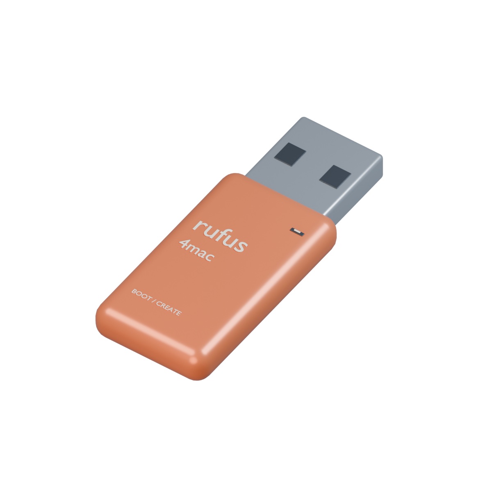
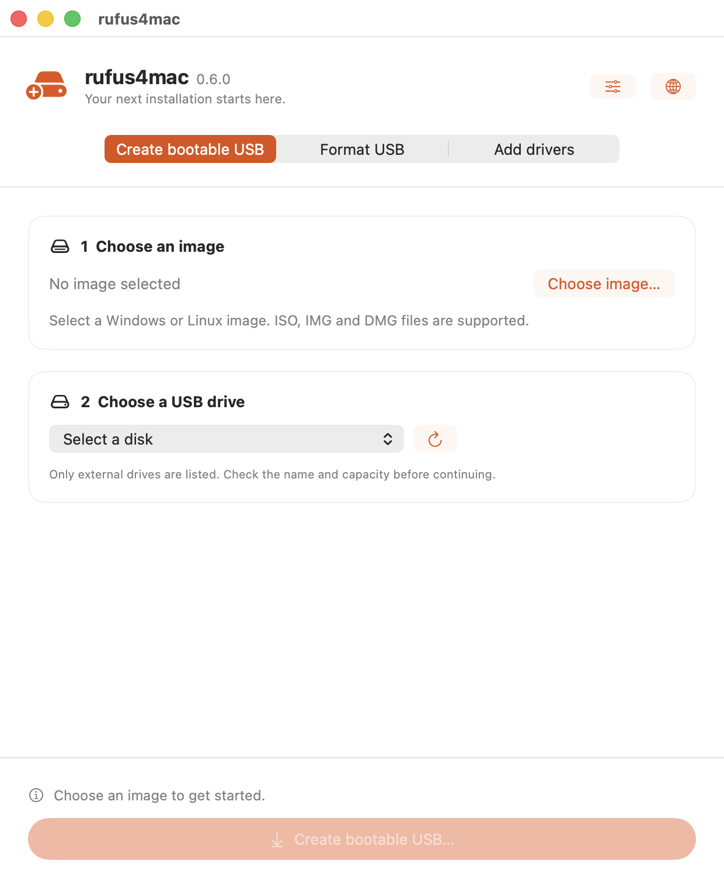
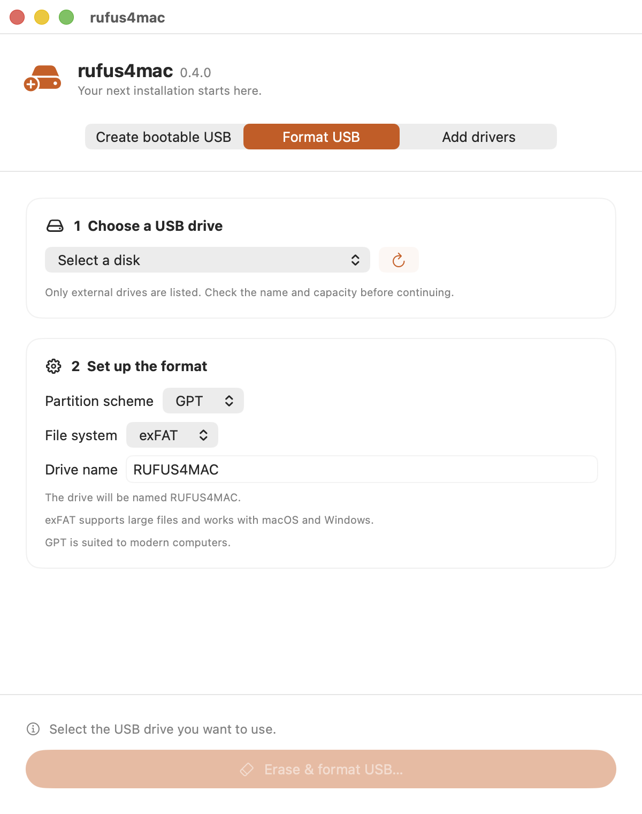
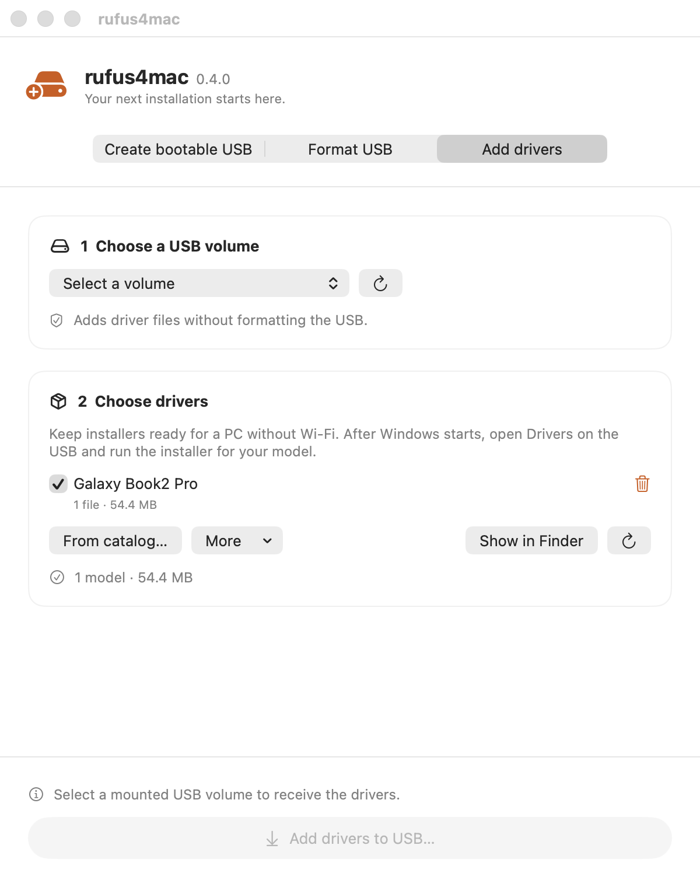

Review before you write.
See the target, image, and options together. Internal and system disks are excluded, and the USB attachment is checked again before writing.
Windows installers. Linux images. Your next machine.
Make the USB that gets it all going.
macOS 13+ · Apple Silicon · Apple notarized

Choose your image. Check your drive. Make it happen. A familiar Mac interface guides you through the details.



Actual app screens · Task views captured across releases.
See the target, image, and options together. Internal and system disks are excluded, and the USB attachment is checked again before writing.
Optional SHA-256 read-back verifies raw image writes. Windows media creation checks copied file sizes and split WIM parts.
Save named presets, revisit your latest 100 tasks, and export JSON reports. Your task history stays on your Mac.
No Homebrew setup. No background daemon.
The WIM tools you need are already bundled.
Open the DMG and drag RufusApp into Applications. You'll need macOS 13 or later on an Apple Silicon Mac.
Get your OS image from its official provider. Back up the USB first: creating media or formatting erases the selected drive.
Confirm the destination and options, then start. Wait for completion and follow the app's ejection guidance.
The prebuilt DMG is for Apple Silicon. Intel Macs require building from source with a matching Intel build of wimlib. Your Mac's architecture is separate from that of the PC you'll install onto.
Windows 10/11 installation USBs use MBR/FAT32 for UEFI boot, with automatic splitting of large install.wim files. Legacy BIOS Windows media is not supported. Validate boot and installation on your destination PC.
No. The app copies installers into a Drivers folder on your USB. Run them on the Windows PC. They are not injected into Windows Setup or installed on your Mac.
rufus4mac is an independent SwiftUI project inspired by Rufus, not an official Rufus port. You can explore its source and development documentation on GitHub.